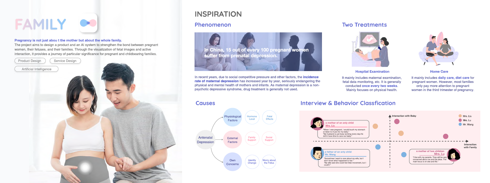
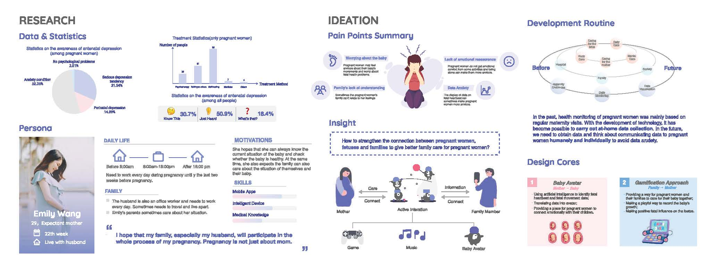
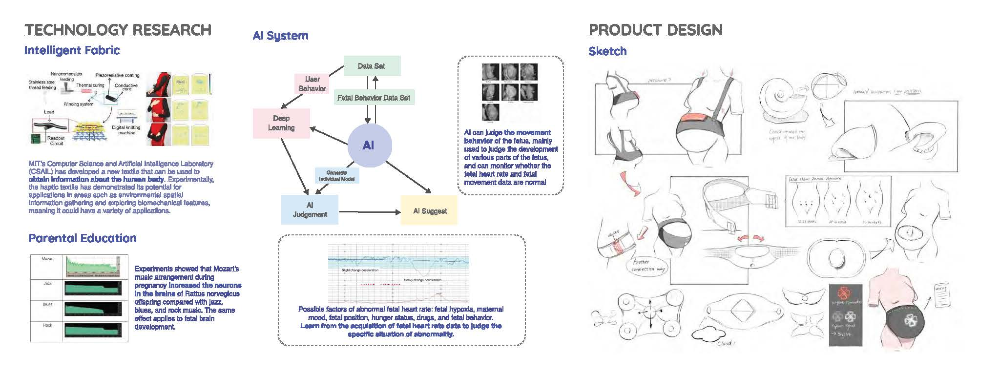
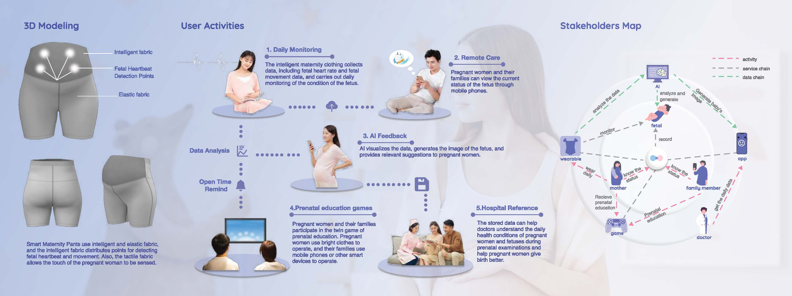
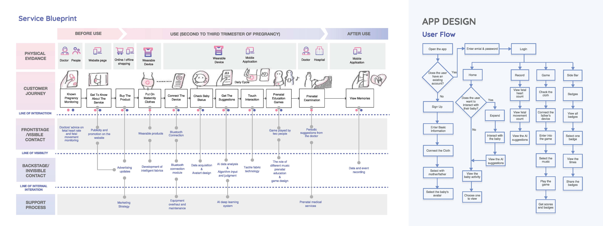
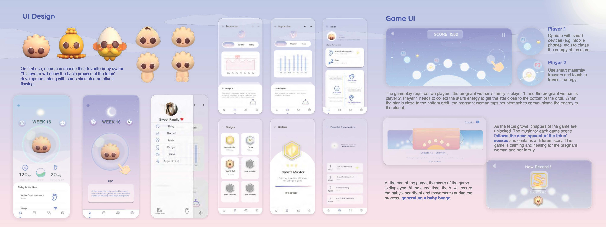

Family
Product Design/UI/UX Design/Family Bonding
Pregnancy is not just about the mother but about the whole family.
The project aims to design a product and an AI system to strengthen the bond between pregnant women, their fetuses, and their families. Through the visualization of fetal images and active interaction, it provides a journey of particular significance for pregnant and childbearing families.





